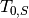

yeh_tm - Yeh’s 4x4 Transfer Matrix Formalism¶
Python implementation of Yeh’s 4x4 transfer matrix formalism for arbitrary birefringent layers and arbitrary angles of incidence. The code follows Yeh’s two seminal papers: Yeh, J. Opt. Soc. Am. 69, 742 (1979) and Yeh, Surf. Sci. 96, 41 (1980).
Layers are represented by the Layer class that holds all parameters describing the optical properties of a single layer. The optical system is assembled using the System class.
Example¶
Reflection spectrum of an 8-layer high-reflector designed for 800nm:
import numpy as np
import pylab as pl
import FSRStools.yeh_tm as tm
import FSRStools.refind as rf
# create wavelength and frequency axes in nm and 1/nm
l = np.linspace(400, 1300, 256)
w = 2 * np.pi / l
# use the refrative index data from the FSRStools.refind module
e1 = lambda x: rf.n_to_eps(rf.n_glass(2e-3 * np.pi / x, type = "SiO2"))
e2 = lambda x: rf.n_to_eps(rf.n_coatings(2e-3 * np.pi / x, type = "MgF2_o"))
e3 = lambda x: rf.n_to_eps(rf.n_coatings(2e-3 * np.pi / x, type = "ZnSe"))
# calculate optimal thickness of coating layers for 800nm
d2 = 800 / rf.n_coatings(0.8, type="MgF2_o") / 4.0
d3 = 800 / rf.n_coatings(0.8, type="ZnSe") / 4.0
# setup the optical system with vacuum as superstrate and substrate
s = tm.System()
# create a thick glass slide as support
s.add_layer(tm.Layer(epsilon1 = e1, thick=True)) # substrate
# calculate and plot the reflectance of the bare glass
C = s.get_intensity_coefficients(w)[0] # rxx, rxy, ryx, ryy, txx, txy, tyx, tyy
pl.plot(l, C)
# add the HR coating: (HL)^n H glass
s.add_layer(tm.Layer(thickness = d3, epsilon1 = e3)) # coating 1
for i in range(8):
s.add_layer(tm.Layer(thickness = d2, epsilon1 = e2)) # coating 2
s.add_layer(tm.Layer(thickness = d3, epsilon1 = e3)) # coating 1
# calculate and plot the reflectance of the HR coated glass
C = s.get_intensity_coefficients(w)[0]
pl.plot(l, C)
# calculate and plot the reflectance of the HR coated glass for 45deg angle of incidence (p-pol)
s.set_theta(45.0)
C = s.get_intensity_coefficients(w)[0]
pl.plot(l, C)
pl.show()
Class Layer¶
Each layer is represented by an instance of the Layer class. This class holds all the physical parameters like thickness, dielectric tensor and orientation.
Layer([thickness, epsilon1, epsilon2, ...]) |
Construct a layer class instance, which controls the physical properties of a single layer. |
Layer.calculate_epsilon(w) |
Calculate the dielectric tensor for given frequency w. |
Layer.calculate_g(w, a, b) |
Calculate propagation constants g along z-axis for current layer. |
Layer.calculate_p_q(w, a, b) |
Calculate the electric and magnetic polarization vectors p and q for the four solutions of self.g. |
Layer.calculate_D() |
Calculate the dynamic matrix and its inverse using the previously calculated values for p and q. |
Layer.calculate_P() |
Calculate the propagation matrix using the previously calculated values for g. |
Layer.calculate_T([calculateDP]) |
Calculate the layer transfer matrix. |
Layer.update(w, a, b) |
Shortcut to recalculate all layer properties. |
Class System¶
The System class represents the optical system whose reflection and transmission coefficients are to be calculated. It manages the layer stacking and the external physical properties like wavelength and angle of incidence.
An optical system consists of the first (semi-infinite) layer (substrate), the intermediate layers and the last (semi-infinite) layer (superstrate). The superstrate is assumed to be isotropic and only the xx component of the dielectric tensor is used for the calculation of the in-plane (x, y) propagation constants.
System([theta, phi, substrate, superstrate, ...]) |
Construct an instance of the System class, which manages the optical system. |
System.add_layer(L) |
Add a layer L to the system. |
System.calculate_T(w) |
Calculate the system transfer matrix  for a given frequency. |
System.get_field_coefficients(w) |
Shortcut to calculate all reflection / transmission coefficients as function of frequency w. |
System.get_intensity_coefficients(w) |
Shortcut to calculate all intensity reflectance / transmittance terms as function of frequency w. |
System.get_field_coefficients_AOI(w, AOI) |
Shortcut to calculate all reflection / transmission coefficients as function of angle of incidence. |
System.get_intensity_coefficients_AOI(w, AOI) |
Shortcut to calculate all intensity reflectance / transmittance terms as function of angle of incidence. |
System.get_electric_field(w, dz[, pol, x, y]) |
Calculate the electric field profile for a given frequency. |
System.set_substrate(S) |
Set the substrate to S. |
System.set_superstrate(S) |
Set the superstrate to S. |
System.set_theta(theta) |
Set angle of incidence to theta (in deg). |
System.set_phi(phi) |
Set rotation of sample around the z-axis (in deg). |
System.rxx() |
Returns the x,x component of the field reflection coefficient (incident x, reflected x). |
System.rxy() |
Returns the x,y component of the field reflection coefficient (incident x, reflected y). |
System.ryx() |
Returns the y,x component of the field reflection coefficient (incident y, reflected x). |
System.ryy() |
Returns the y,y component of the field reflection coefficient (incident y, reflected y). |
System.txx() |
Returns the x,x component of the field transmission coefficient (incident x, transmitted x). |
System.txy() |
Returns the x,y component of the field transmission coefficient (incident x, transmitted y). |
System.tyx() |
Returns the y,x component of the field transmission coefficient (incident y, transmitted x). |
System.tyy() |
Returns the y,y component of the field transmission coefficient (incident y, transmitted x). |
Needle Algorithm¶
The following functions provide support for the so-called needle algorithm for automated design of dielectric / metallic multilayer components. The algorithm is a simplified version based on Sullivan and Dobrowolski, Appl. Opt. 35, 5484 (1996). Given a set of target optical properties and an initial system class with at least one optical layer, the needle algorithm tries to optimize the design by varying the thickness of each layer followed by insertion of a very thin layer with different refractive index. Currently, the design can only be optimized for one of the following properties: Rxx, Rxy, Ryx, Ryy, Txx, Txy, Tyx, Tyy.
needle(S, w, Q, M1, M2[, d, dQ, Qid, ...]) |
Simplified implementation of the needle algorithm for thin film design. |
get_merit(S, w, Q[, dQ, Qid]) |
Calculate the merit function of the current layer stack. |
optimize_thicknesses(S, w, Q[, dQ, Qid, ...]) |
Optimize the thicknesses of each layer to minimize the merit function. |
insert_needle(S, pos, M1, M2[, d]) |
Insert a needle, i.e., a very thin layer with different refractive index into the center of the layer at a given position and return the resulting System class instance. |
remove_needle(S, pos) |
Remove a layer from the layer stack in the given System from the given position. |
remove_all_needles(S[, dmin]) |
Iteratively removes all layers from the System class whose thickness is below dmin. |
optimized_insert_needle(S, w, Q, M1, M2[, ...]) |
Insert a needle in the Layer stack at the optimum position by comparing the merit functions of all combinations. |
Utility Functions¶
These functions are called internally by the Layer and System class methods.
null_space(A[, eps]) |
Compute the null space of matrix A which is the solution set x to the homogeneous equation Ax = 0. |
eroot(a) |
Returns the evanescent root of a number, where the imaginary part has the physically correct sign. |
norm(a) |
Normalize a vector to its length. |
evacuum(x) |
Returns the dielectric function of vacuum (1). |